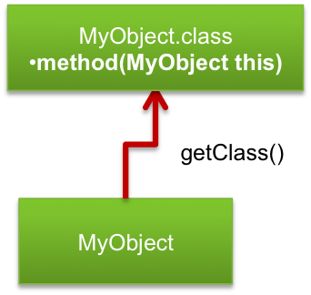
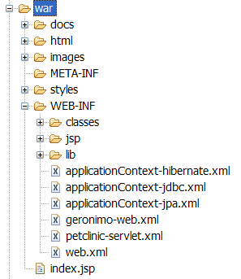
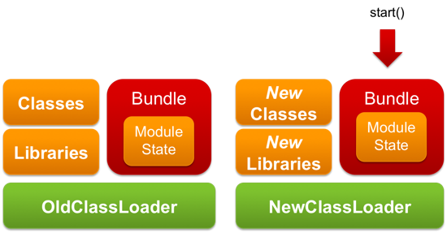

ori：http://zeroturnaround.com/rebellabs/reloading-objects-classes-classloaders/
The first thing to understand when talking about reloading Java code is the relation between classes and objects. All Java code is associated with methods contained in classes. Simplified, you can think of a class as a collection of methods, that receive “this” as the first argument. The class with all its methods is loaded into memory and receives a unique identity. In the Java API this identity is represented by an instance of java.lang.Class that you can access using the MyObject.class expression.
Every object created gets a reference to this identity accessible through the Object.getClass() method. When a method is called on an object, the JVM consults the class reference and calls the method of that particular class. That is, when you call mo.method() (where mo is an instance of MyObject), then the JVM will call mo.getClass().getDeclaredMethod("method").invoke(mo) (this is not what the JVM actually does, but the result is the same).

Every Class object is in turn associated with its classloader (MyObject.class.getClassLoader()). The main role of the class loader is to define a class scope — where the class is visible and where it isn’t. This scoping allows for classes with the same name to exist as long as they are loaded in different classloaders. It also allows loading a newer version of the class in a different classloader.
The main problem with code reloading in Java is that although you can load a new version of a class, it will get a completely different identity and the existing objects will keep referring the previous version of the class. So when a method is called on those objects it will execute the old version of the method.
Let’s assume that we load a new version of the MyObject class. Let’s refer to the old version as MyObject_1 and to the new one as MyObject_2. Let’s also assume that MyObject.method() returns 1 in MyObject_1 and 2 in MyObject_2. Now if mo2 is an instance of MyObject_2:
mo.getClass() != mo2.getClass()
mo.getClass().getDeclaredMethod("method").invoke(mo)
!= mo2.getClass().getDeclaredMethod("method").invoke(mo2)
mo.getClass().getDeclaredMethod("method").invoke(mo2) throws a
ClassCastException, because the Class identities of mo and mo2 do no
match.
This means that any useful solution must create a new instance of mo2 that is an exact copy of mo and replace all references to mo with it. To understand how hard it is, remember the last time you had to change your phone number. It’s easy enough to change the number itself, but then you have to make sure that everyone you know will use the new number, which is quite a hassle. It’s just as difficult with objects (in fact, it’s actually impossible, unless you control the object creation yourself), and we’re talking about many objects that you must update at the same time.
Let’s see how this would look in code. Remember, what we’re trying to do here is load a newer version of a class, in a different classloader. We’ll use an Example class that looks like this:
public class Example implements IExample {
private int counter;
public String message() {
return "Version 1";
}
public int plusPlus() {
return counter++;
}
public int counter() {
return counter;
}
}
We’ll use a main() method that will loop infinitely and print out the information from the Example class. We’ll also need two instances of the Example class: example1 that is created once in the beginning and example2 that is recreated on every roll of the loop:
public class Main {
private static IExample example1;
private static IExample example2;
public static void main(String[] args) {
example1 = ExampleFactory.newInstance();
while (true) {
example2 = ExampleFactory.newInstance();
System.out.println("1) " +
example1.message() + " = " + example1.plusPlus());
System.out.println("2) " +
example2.message() + " = " + example2.plusPlus());
System.out.println();
Thread.currentThread().sleep(3000);
}
}
}
IExample is an interface with all the methods from Example. This is necessary because we’ll be loading Example in an isolated classloader, so Main cannot use it directly (otherwise we’d get a ClassCastException).
public interface IExample {
String message();
int plusPlus();
}
From this example, you might be surprised to see how easy it is to create a dynamic class loader. If we remove the exception handling it boils down to this:
public class ExampleFactory {
public static IExample newInstance() {
URLClassLoader tmp =
new URLClassLoader(new URL[] {getClassPath()}) {
public Class loadClass(String name) {
if ("example.Example".equals(name))
return findClass(name);
return super.loadClass(name);
}
};
return (IExample)
tmp.loadClass("example.Example").newInstance();
}
}
The method getClassPath() for the purposes of this example could return the hardcoded classpath. However, in the full source code (available in the Resources section below) you can see how we can use the ClassLoader.getResource() API to automate that.
Now let’s run Main.main and see the output after waiting for a few loop rolls:
As expected, while the counter in the first instance is updated, the second stays at “0″. If we change the Example.message() method to return “Version 2″. The output will change as follows:
As we can see, the first instance continues incrementing the counter, but uses the old version of the class to print out the version. The second instance class was updated, however all of the state is lost.
To remedy this, let’s try to reconstruct the state for the second instance. To do that we can just copy it from the previous iteration.
First we add a new copy() method to Example class (and corresponding interface method):
public IExample copy(IExample example) {
if (example != null)
counter = example.counter();
return this;
}
Next we update the line in the Main.main() method that creates the second instance:
example2 = ExampleFactory.newInstance().copy(example2);
Now waiting for a few iterations yields:
And changing Example.message() method to return “Version 2″ yields:
As you can see even though it’s possible for the end user to see that the second instance is updated and all its state is preserved, it involves managing that state by hand. Unfortunately, there is no way in the Java API to just update the class of an existing object or even reliably copy its state, so we will always have to resort to complicated workarounds.
In subsequent articles we’ll review how web containers, OSGi, Tapestry 5, Grails and others confront the problem of managing state when reloading classes, then we’ll dig into how HotSwap, Dynamic Languages, and the Instrumentation API work, and go behind the scenes with JRebel as well.
reference：http://www.onjava.com/pub/a/onjava/2005/01/26/classloading.html
source code：code/classloader/rjc101.zip
If you have programmed in Java for some time you know that memory leaks do happen. Usually it’s the case of a collection somewhere with references to objects (e.g. listeners) that should have been cleared, but never were. Classloaders are a very special case of this, and unfortunately, with the current state of the Java platform, these leaks are both inevitable and costly: routinely causing OutOfMemoryError’s in production applications after just a few redeploys.
Let’s get started. Recalling RJC101: to reload a class we threw away the old classloader and created a new one, copying the object graph as best we could:
Every object had a reference to its class, which in turn had a reference to its classloader. However we didn’t mention that every classloader in turn has a reference to each of the classes it has loaded, each of which holds static fields defined in the class:
This means that:
To examine this from a different perspective let’s return to the code example from our previous article java.classloader.base. Breeze through it to quickly catch up.
We will use the exact same Main class as before to show what a simple leak could look like:
public class Main {
private static IExample example1;
private static IExample example2;
public static void main(String[] args) {
example1 = ExampleFactory.newInstance().copy();
while (true) {
example2 = ExampleFactory.newInstance().copy();
System.out.println("1) " +
example1.message() + " = " + example1.plusPlus());
System.out.println("2) " +
example2.message() + " = " + example2.plusPlus());
System.out.println();
Thread.currentThread().sleep(3000);
}
}
}
The ExampleFactory class is also exactly the same, but here’s where things get leaky. Let’s introduce a new class called Leak and a corresponding interface ILeak:
interface ILeak {
}
public class Leak implements ILeak {
private ILeak leak;
public Leak(ILeak leak) {
this.leak = leak;
}
}
As you can see it’s not a terribly complicated class: it just forms a chain of objects, with each doing nothing more than holding a reference to the previous one. We will modify the Example class to include a reference to the Leak object and throw in a large array to take up memory (it represents a large cache). Let’s omit some methods shown in the previous article for brevity:
public class Example implements IExample {
private int counter;
private ILeak leak;
private static final long[] cache = new long[1000000];
/* message(), counter(), plusPlus() impls */
public ILeak leak() {
return new Leak(leak);
}
public IExample copy(IExample example) {
if (example != null) {
counter = example.counter();
leak = example.leak();
}
return this;
}
}
The important things to note about Example class are:
Example holds a reference to Leak, but Leak has no references to Example.
Example is copied (method copy() is called) a new Leak object is created holding a reference to the previous one.
If you try to run this code an OutOfMemoryError will be thrown after just a few iterations:
Exception in thread "main" java.lang.OutOfMemoryError: Java heap space at example.Example.<clinit>(Example.java:8)
With the right tools, we can look deeper and see how this happens.
Since Java 5.0, we’ve been able to use the jmap command line tool included in the JDK distribution to dump the heap of a running application (or for that matter even extract the Java heap from a core dump). However, since our application is crashing we will need a feature that was introduced in Java 6.0: dumping the heap on OutOfMemoryError. To do that we only need to add -XX:+HeapDumpOnOutOfMemoryError to the JVM command line:
java.lang.OutOfMemoryError: Java heap space Dumping heap to java_pid37266.hprof ... Heap dump file created [57715044 bytes in 1.707 secs] Exception in thread "main" java.lang.OutOfMemoryError: Java heap space at example.Example.<clinit>(Example.java:8)
After we have the heap dump we can analyze it. There are a number of tools (including jhat, a small web-based analyzer included with the JDK), but here we will use the more sophisticated 'Eclipse Memory Analyzer (EMA)'.
After loading the heap dump into the EMA we can look at the Dominator Tree analysis. It is a very useful analysis that will usually reliably identify the biggest memory consumers in the heap and what objects hold a reference to them. In our case it seems quite obvious that the Leak class is the one that consumes most of the heap:
Now let’s run a search for all of the Leak objects and see what are they holding to. To do that we run a search List objects -> with outgoing references for “example.Leak”:
The results include several Leak objects. Expanding the outgoing references we can see that each of them holds on to a separate instance of Example through a bunch of intermediate objects:
You may notice that one of the intermediate objects is ExampleFactory$1, which refers to the anonymous subclass of URLClassLoader we created in the ExampleFactory class. In fact what is happening is exactly the situation we described in the beginning of the article:
Leak object is leaking. They are holding on to their classloaders
Example class they have loaded:
Though this example is slightly contrived, the main idea to take away is that it’s easy to leak a single object in Java. Each leak has the potential to leak the whole classloader if the application is redeployed or otherwise a new classloader is created. Since preventing such leaks is very challenging, it’s a better idea to use Eclipse Memory Analyzer and your understanding of classloaders to hunt them down after you get an OutOfMemoryError on redeploy.
This article addressed the following questions:
source code：code/classloader/rjc2011.zip
In order for a Java EE web application to run, it has to be packaged into an archive with a .WAR extension and deployed to a servlet container like Tomcat. This makes sense in production, as it gives you a simple way to assemble and deploy the application, but when developing that application you usually just want to edit the application’s files and see the changes in the browser.
A Java EE enterprise application has to be packaged into an archive with an .EAR extension and deployed to an application container. It can contain multiple web applications and EJB modules, so it often takes a while to assemble and deploy it. Recently, 1100+ EE developers told us how much time it takes them, and we compiled the results into the Redeploy and Restart Report. Spoiler: Avg redeploy & restart time is 2.5 minutes – which is higher than we expected.
In Reloading Java Classes 101 java.classloader.base , we examined how dynamic classloaders can be used to reload Java classes and applications. In this article we will take a look at how servers and frameworks use dynamic classloaders to speed up the development cycle. We’ll use Apache Tomcat as the primary example and comment when behavior differs in other containers (Tomcat is also directly relevant for JBoss and GlassFish as these containers embed Tomcat as the servlet container).
To make use of dynamic classloaders we must first create them. When deploying your application, the server will create one classloader for each application (and each application module in the case of an enterprise application). The classloaders form a hierarchy as illustrated:
In Tomcat each .WAR application is managed by an instance of the StandardContext class that creates an instance of WebappClassLoader used to load the web application classes. When a user presses “reload” in the Tomcat Manager the following will happen:
StandardContext.reload() method is called
WebappClassLoader instance is replaced with a new one
Servlet.init() is called on them
Calling Servlet.init() recreates the “initialized” application state with the updated classes loaded using the new classloader instance. The main problem with this approach is that to recreate the “initialized” state we run the initialization from scratch, which usually includes loading and processing metadata/configuration, warming up caches, running all kinds of checks and so on. In a sufficiently large application this can take many minutes, but in a in small application this often takes just a few seconds and is fast enough to seem instant, as commonly demonstrated in the Glassfish v3 promotional demos.
If your application is deployed as an .EAR archive, many servers allow you to also redeploy each application module separately, when it is updated. This saves you the time you would otherwise spend waiting for non-updated modules to reinitialize after the redeployment.
Web containers commonly have a special directory (e.g. “webapps” in Tomcat, “deploy” in JBoss) that is periodically scanned for new web applications or changes to the existing ones. When the scanner detects that a deployed .WAR is updated, the scanner causes a redeploy to happen (in Tomcat it calls the StandardContext.reload() method). Since this happens without any additional action on the user’s side it is commonly referred to “Hot Deployment”.
Hot Deployment is supported by all wide-spread application servers under different names: autodeployment, rapid deployment, autopublishing, hot reload, and so on. In some containers, instead of moving the archive to a predefined directory you can configure the server to monitor the archive at a specific path. Often the redeployment can be triggered from the IDE (e.g. when the user saves a file) thus reloading the application without any additional user involvement. Although the application is reloaded transparently to the user, it still takes the same amount of time as when hitting the “Reload” button in the admin console, so code changes are not immediately visible in the browser, for example.
Another problem with redeployment in general and hot deployment in particular is classloader leaks. As we reviewed in Reloading Java Classes 201 java.classloader.mem-leak , it is amazingly easy to leak a classloader and quickly run out of heap causing an OutOfMemoryError. As each deployment creates new classloaders, it is common to run out of memory in just a few redeploys on a large enough application (whether in development or in production).
An additional feature supported by the majority of web containers is the so called “exploded deployment”, also known as “unpackaged” or “directory” deployment. Instead of deploying a .WAR archive, one can deploy a directory with exactly the same layout as the .WAR archive:

Why bother? Well, packaging an archive is an expensive operation, so deploying the directory can save quite a bit of time during build. Moreover, it is often possible to set up the project directory with exactly the same layout as the .WAR archive. This means an added benefit of editing files in place, instead of copying them to the server. Unfortunately, as Java classes cannot be reloaded without a redeploy, changing a .java file still means waiting for the application to reinitialize.
With some servers it makes sense to find out exactly what triggers the hot redeploy in the exploded directory. Sometimes the redeploy will be triggered only when the “web.xml” timestamp changes, or as in the case of GlassFish only when a special ”.reload” file timestamp changes. In most servers any change to deployment descriptors or compiled classes will cause a hot redeploy.
If your server only supports deploying by copying to a special directory (e.g. Tomcat “webapps”, JBoss “deploy” directories) you can skip the copying by creating a symlink from that special directory to your project workspace. On Linux and Mac OS X you can use the common “ln -s” command to do that, whereas on Windows you should download the Sysinternals “junction” utility.
If you use Maven, then it’s quite complicated to set up exploded development from your workspace. If you have a solo web application you can use the Maven Jetty plugin, which uses classes and resources directly from Maven source and target project directories. Unfortunately, the Maven Jetty plugin does not support deploying multiple web applications, EJB modules or EARs so in the latter case you’re stuck doing artifact builds.
Since we’re on the topic of reloading classes, and redeploying involves reinitializing an application, it makes sense to talk about session state. An HTTP session usually holds information like login credentials and conversational state. Losing that session when developing a web application means spending time logging in and browsing to the changes page – something that most web containers have tried to solve by serializing all of the objects in the HttpSession map and then deserializing them in the new classloader. Essentially, they copy all of the session state. This requires that all session attributes implement Serializable (ensuring session attributes can be written to a database or a file for later use), which is not restricting in most cases.
Session persistence has been present in most major containers for many years (e.g. Restart Persistence in Tomcat), but was notoriously absent in Glassfish before v3.
There is a lot of misunderstanding surrounding what exactly OSGi does and doesn’t do. If we ignore the aspects irrelevant to the current issue, OSGi is basically a collection of modules each wrapped in its own classloader, which can be dropped and recreated at will. When it’s recreated, the modules are reinitialized exactly the same way a web application is.

The difference between OSGi and a web container is that OSGi is something that is exposed to your application, that you use to split your application into arbitrarily small modules. Therefore, by design, these modules will likely be much smaller than the monolithic web applications we are used to building. And since each of these modules is smaller and we can “redeploy” them one-by-one, re-initialization takes less time. The time depends on how you design your application (and can still be significant).
Recently, some web frameworks, such as Tapestry 5, RIFE and Grails, have taken a different approach, taking advantage of the fact that they already need to maintain application state. They’ll ensure that state will be serializable, or otherwise easily re-creatable, so that after dropping a classloader, there is no need to reinitialize anything.
This means that application developers use frameworks’ components and the lifecycle of those components is handled by the framework. The framework will initialize (based on some configuration, either xml or annotation based), run and destroy the components.
As the lifecycle of the components is managed by the framework, it is easy to recreate a component in a new classloader without user intervention and thus create the effect of reloading code. In the background, the old component is destroyed (classloader is dropped) and a new one created (in a new classloader where the classes are read in again) and the old state is either deserialized or created based on the configuration.
This has the obvious advantage of being very quick, as components are small and the classloaders are granular. Therefore the code is reloaded instantly, giving a smooth experience in developing the application. However such an approach is not always possible as it requires the component to be completely managed by the framework. It also leads to incompatibilities between the different class versions causing, among others, ClassCastExceptions.
It’s worth mentioning that using classloaders for code reloading really isn’t as smooth as we have described here – this is an introductory article series. Especially with the more granular approaches (such as frameworks that have per component classloaders, manual classloader dropping and recreating, etc), when you start getting a mixture of older and newer classes all hell can break loose. You can hold all kinds of references to old objects and classes, which will conflict with the newly loaded ones (a common problem is getting a ClassCastException), so watch what you’re doing along the way. As a side note: Groovy is actually somewhat better at handling this, as all calls through the Meta-Object Protocol are not subject to such problems. This article addressed the following questions:
Coming up next, we continue our explanation of classloaders and the redeploy process with an investigation into HotSwap and JRebel, two tools used to reduce time spent reloading and redeploying. Stay tuned!
In 2002, Sun introduced a new experimental technology into the Java 1.4 JVM, called HotSwap. It was incorporated within the Debugger API, and allowed debuggers to update class bytecode in place, using the same class identity. This meant that all objects could refer to an updated class and execute new code when their methods were called, preventing the need to reload a container whenever class bytecode was changed. All modern IDEs (including Eclipse, IDEA and NetBeans) support it. As of Java 5 this functionality is also available directly to Java applications, through the java Instrumentation API.
http://java.sun.com/javase/6/docs/technotes/guides/instrumentation/index.html
Unfortunately, this redefinition is limited only to changing method bodies — it cannot either add methods or fields or otherwise change anything else, except for the method bodies. This limits the usefulness of HotSwap, and it also suffers from other problems:
This causes HotSwap to be used less than, perhaps, it should be.
This question has been asked a lot during the almost 10 years since the introduction of HotSwap. One of the most voted for bugs for the JVM calls for supporting a whole array of changes, but so far it has not been implemented.
A disclaimer: I do not claim to be a JVM expert. I have a good general idea how the JVM is implemented and over the years I talked to a few (ex-)Sun engineers, but I haven’t verified everything I’m saying here against the source code. That said, I do have some ideas as to the reasons why this bug is still open (but if you know the reasons better, feel free to correct me).
The JVM is a heavily optimized piece of software, running on multiple platforms. Performance and stability are the highest priorities. To support them in different environments the Sun JVM features:
These features make evolving the class schema a considerable challenge. To understand why, we need to look a little closer as to what exactly is necessary to support adding methods and fields (and even more advanced, changing the inheritance hierarchy).
When loaded into the JVM, an object is represented by a structure in memory, occupying a continuous region of memory with a specific size (its fields plus metadata). In order to add a field, we would need to resize that structure, but since nearby regions may already be occupied, we would need to relocate the whole structure to a different region where there is enough free space to fit it in. Now, since we’re actually updating a class (and not just a single object) we would have to do this to every object of that class.
In itself this would not be hard to achieve — Java garbage collectors already relocate objects all the time. The problem is that the abstraction of one “heap” is just that, an abstraction. The actual layout of memory depends on the garbage collector that is currently active and, to be compatible with all of them, the relocation should probably be delegated to the active garbage collector. The JVM will also need to be suspended for the time of relocation, so doing GC at the same time makes sense.
Adding a method does not require updating the object structure, but it does require updating the class structure, which is also present on the heap. But consider this: the moment after a class has been loaded it is essentially is frozen forever. This enables the JIT to perform the main optimization that the JVM does — inlining. Most of the method calls in your application hot spots are eliminated and the code is copied to the calling method. A simple check is inserted to ensure that the target object is indeed what we think it is.
Here’s the punchline: the moment we can add methods to classes this “simple check” is not enough. We would need a considerably more complicated check that needs to ensure not only that no methods with the same name were added to the target class, but also to all it’s superclasses. Alternatively we could track all the inlined spots and their dependencies and deoptimize them when a class is updated. Either way it has a cost in either performance or complexity.
On top of that, consider that we’re talking about multiple platforms with varying memory models and instructions sets that probably require at least some specific handling and you get yourself an expensive problem with not much return on investment.
In 2007, ZeroTurnaround announced the availability of a tool called JRebel (then JavaRebel) that could update classes without dynamic class loaders and with very few limitations. Unlike HotSwap, which is dependent on IDE integration, the tool works by monitoring the actual compiled .class files on disk and updating the classes whenever the files are updated. This means that you can use JRebel with a text editor and command-line compiler if so willing. Of course, it’s also integrated neatly into Eclipse, IntelliJ, and NetBeans. Unlike dynamic classloaders, JRebel preserves the identity and state of all existing objects and classes, allowing developers to continue using their application without delay.
For starters, JRebel works on a different level of abstraction than HotSwap. Whereas HotSwap works at the virtual machine level and is dependent on the inner workings of the JVM, JRebel makes use of two remarkable features of the JVM — abstract bytecode and classloaders. Classloaders allow JRebel to recognize the moment when a class is loaded, then translate the bytecode on-the-fly to create another layer of abstraction between the virtual machine and the executed code.
Others have used this features to enable profilers, performance monitoring, continuations, software transactional memory and even distributed heap. Combining bytecode abstraction with classloaders is a powerful combination, and can be used to implement a variety of features even more exotic than class reloading. As we examine the issue closer, we’ll see that the challenge is not just in reloading classes, but also doing so without a visible degradation in performance and compatibility.
As we reviewed in Reloading Java Classes 101（前面的基础部分） the problem in reloading classes is that once a class has been loaded it cannot be unloaded or changed; but we are free to load new classes as we please. To understand how we could theoretically reload classes, let’s take a look at dynamic languages on the Java platform. Specifically, let’s take a look at JRuby (we’ll simplify a lot, so don’t crucify anyone important).
Although JRuby features “classes”, at runtime each object is dynamic and new fields and methods can be added at any moment. This means that a JRuby object is not much more than a Map from method names to their implementations and from field names to their values. The implementations for those methods are contained in anonymously named classes that are generated when the method is encountered. If you add a method, all JRuby has to do is generate a new anonymous class that includes the body of that method. As each anonymous class has a unique name there are no issues loading it and as a result the application is updated on-the-fly.
Theoretically, since bytecode translation is usually used to modify the class bytecode, there is no reason why we can’t use the information in that class and just create as many classes as necessary to fulfill its function. We could then use the same transformation as JRuby and split all Java classes into a holder class and method body classes. Unfortunately, such an approach would be subject to (at least) the following problems:
Therefore, JRebel does not take such an approach. Instead it uses a much more complicated approach, based on advanced compilation techniques, that leaves us with one master class and several anonymous support classes backed by the JIT transformation runtime that allow modifications to take place without any visible degradation in performance or compatibility. It also
Reloading classes is something Java developers have complained about for a long time, but once we solved it, other problems turned up.
The Java EE standard was developed without much concern for development Turnaround (the time it takes between making a change to code and seeing the effects of that change in an application). It expects that all applications and their modules be packaged into archives (JARs, WARs and EARs), meaning that before you can update any file in your application, you need to update the archive — which is usually an expensive operation involving a build system like Ant or Maven. As we discussed in Reloading Java Classes 301（前面的服务器部分） this can be minimized by using exploded development and incremental IDE builds, but for large application this is commonly not a viable option.
To solve this problem in JRebel 2.x we developed a way for the user to map archived applications and modules back to the workspace — our users create a rebel.xml configuration file in each application and module that tells JRebel where the source files can be found. JRebel integrates with the application server, and when a class or resource is updated it is read from the workspace instead of the archive.
This allows for instant updates of not just classes, but any kind of resources like HTML, XML, JSP, CSS, .properties and so on. Maven users don’t even need to create a rebel.xml file, since our Maven plugin will generate it automatically.
En route to eliminating Turnaround, another issue becomes obvious: Nowadays, applications are not just classes and resources, they are wired together by extensive configuration and metadata. When that configuration changes it should be reflected in the running application. However it’s not enough to make the changes to the configuration files visible, the specific framework must reload it and reflect the changes in the application.
To support these kinds of changes in JRebel we developed an open source API that allows our team and third party contributers to make use of JRebel’s features and propagate changes in configuration to the framework, using framework-specific plugins. E.g. we support adding beans and dependencies in Spring on-the-fly as well as a wide variety of changes in other frameworks.
This article sums up the methods to reload Java classes without dynamic class loaders. We also discuss the reasons for HotSwap’s limitations, how JRebel works behind the scenes and the problems that arise when class reloading is solved.
Last year we ran two surveys asking developers how much time they spend building and redeploying their application. Although we’ve been talking with developers about this for a long time, and everyone understands that some amount of time is spent on builds and redeploys, it was still surprising to see the results – including actual numbers of minutes, days, and weeks spent on the process. For example, during an average hour of coding developers spend:
To be fair, there are large deviations on both sides of these averages — the survey data we used only came from 600 and 1100 respondents respectively, and they used a variety of technologies which you can read about in the reports themselves. Some folks don’t spend as much as the averages, while others spend much more, and your project could be anywhere in that range.
Given that, the averages should apply pretty nicely to Java EE development as an industry (with the usual disclaimer of “lies, damn lies and statistics”). Let’s take a look at an awful scenario — where everyone in the industry is right on the average:
If you’d like to work out the time or cash spent annually by the industry on Turnaround, these are some numbers you can start with.
Programming is complicated. In fact it’s so complicated that most people are not capable of doing it. Those who are capable must mentally juggle a lot of context while writing code.. context including specifications, GUI considerations, relevant library calls, relevant application classes, methods and variables and so on.
This information is held in the the working (aka short-term) memory. Since the working memory is not meant for long term storage, switching away from a current task means that you will start losing the context surrounding the code, and then spend time trying to get back into it. The rest of the article will discuss how quickly context is lost, how long it takes to restore it, and what effect it has on the quality of your work.
In 1959, an article titled, “Short-Term Retention of Individual Verbal Items” by L. Peterson and M. Peterson appeared in the Journal of Experimental Psychology [Source: http://www-test.unifr.ch/psycho/site/assets/files/Allg/ExU/Peterson_1959.pdf]. It showed that on average, after only 3 seconds, about half of our working memory is lost. The following graph plots the amount of working memory preserved after every subsequent 3 seconds:
After 15 seconds, less than 10% of the original memory is preserved. While these results may not be directly applicable to the programming context, it is clear that memory degradation occurs after seconds, not minutes. Translated, it means that short distractions cause dramatic losses in working memory.
Although there’s not a direct answer to that question, going through the relevant literature gives us some clues:
the recovery time after a phone call is at least 15 minutes. If more than 10 interrupts occur during a day, the time between the interrupts becomes too short to accomplish product development work. Rini van Solingen et al, Interrupts: Just a Minute Never Is
To take a call you need to completely switch away from your working environment and focus on the conversation. Other interrupts are less disruptive than that:
Recovering from an email interrupt, and returning to work at the same work rate as before the interrupt — 64 seconds. Thomas Jackson et al, Case Study: Evaluating the Effect of Email Interruptions within the Workplace
Instant message — 11 to 25 seconds. Thomas Jackson, Instant Messaging Implications in the Transition from a Private Consumer Activity to a Communication Tool for Business
FYI – These quotes are not based on software developers, but rather more generic office workers. Take that as you’d like. Since context recovery is a process, it takes some time to get back to maximum speed after an interrupt:
The trouble is, getting into “the zone” is not easy. When you try to measure it, it looks like it takes an average of 15 minutes to start working at maximum productivity. [...] The other trouble is that it’s so easy to get knocked out of the zone. Noise, phone calls, going out for lunch, having to drive 5 minutes to Starbucks for coffee, and interruptions by coworkers [...] all knock you out of the zone. Joel Spolsky, Where do These People Get Their (Unoriginal) Ideas?
So what about development Turnaround — should that be considered an interrupt and how much does it add to the cost?
From experience, any pause will cause the working memory to start fading, and longer pauses will cause developers to multi-task (even if the other task is reading Slashdot). This will mean that the context surrounding a particular task is at least partially lost and needs to be restored. A longer pause means more memory degradation, increased likelihood of a task switch, and the assumption that recovery time is also longer. Just to illustrate, let’s assume that it takes 50% of the length of the pause to recover the context after getting back to work. In that case, the total cost of turnaround for a java developer dealing with average build and redeploy delays looks something like:
These numbers make a lot of assumptions. I’m not convinced that the average hourly wage of someone reading this blog is $20. I’m also not convinced that these numbers make an air-tight argument — but the point here is: the social cost of Turnaround is more than just the time spent on building, redeploying, & restarting.
Finally, I’m not convinced that developers keep all the code they wrote on a day full of distractions – I get the feeling that long turnaround times, distractions, and interruptions have a negative effect on code quality, and on the mental abilities of other developers. Though we couldn’t find data measuring this specifically, there is some indication that this impact is also not trivial, and I’d like to finish with it:
In a series of tests carried out by Dr Glenn Wilson, Reader in Personality at the Institute of Psychiatry, University of London, an average worker’s functioning IQ falls ten points when distracted by ringing telephones and incoming emails. This drop in IQ is more than double the four point drop seen following studies on the impact of smoking marijuana. Similarly, research on sleep deprivation suggests that an IQ drop of ten points is equal to missing an entire night of sleep. This IQ drop was even more significant in the men who took part in the tests. Dr Glenn Wilson
Many programmers appear to be continually frustrated in attempts to work. They are plagued by noise and interruption, and pessimistic that the situation will ever be improved. The data recorded about actual interruptions supports the view that the so-called “work-day” is made up largely of frustration time. T. DeMarco and T. Lister, Programmer performance and the effects of the workplace,
It’s been a long trip from the beginning of the series to this point. We can only hope that we answered some of your questions and maybe posed some new questions to answer. Probably the most important point that we were trying to bring to your attention is that reducing Java turnaround is a complex and expensive problem, which deserves a lot more attention than it’s getting at the moment
What are your thoughts on all this?